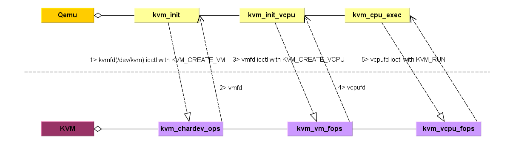
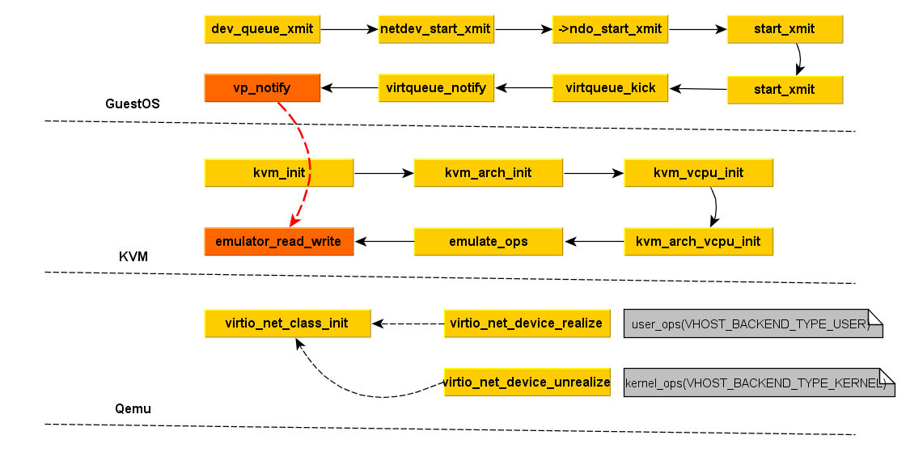

KVM virtulization with Qemu
Qemu Threads
- main thread: main_loop()/vl.c, main_loop_wait()/main-loop.c
- Waits for file descriptors to become readable or writable. File descriptors play a critical role because files, sockets, pipes, and various other resources are all file descriptors. File descriptors can be added using qemu_set_fd_handler().
- Runs expired timers. Timers can be added using qemu_mod_timer().
- Runs bottom-halves (BHs), which are like timers that expire immediately. BHs are used to avoid reentrancy and overflowing the call stack. BHs can be added using qemu_bh_schedule().
- io thread: iothread_run()
- vcpu thread: qemu_kvm_cpu_thread_fn()
KVM and Qemu Interaction Diagram
- KVM and Qemu Interaction Diagram

GuestOS, KVM and Qemu Iteraction Diagram: virtio-net
- GuestOS, KVM and Qemu Iteraction Diagram: virtio-net

Reference